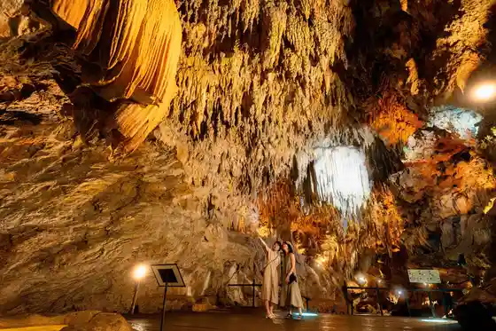
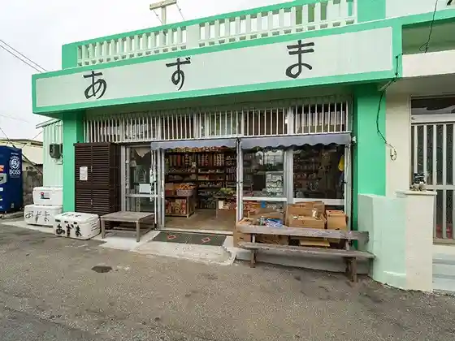
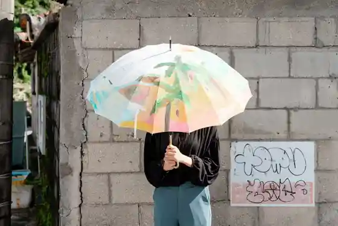

CAVE OKINAWA Kigaru Ni Tanoshi Meru Shinpi no Limestone Cave !
Uruma, Okinawa · 098-964-4888 · Official / source link

Agachi Unten Daiko
Uruma, Okinawa · 080-6485-9978 · Official / source link
Azuma Shoten
Uruma, Okinawa · 098-978-4029 · Official / source link

Uruma Shimadakara Geijutsu Matsuri
Uruma, Okinawa · 098-923-5995 · Official / source link

Araka
Uruma, Okinawa · Official / source link
Tomai Hama (Tsu Ken Beach)
Uruma, Okinawa · Official / source link
Ninjin Lookout
Uruma, Okinawa · Official / source link
no Tchi
Uruma, Okinawa · 098-989-1148 · Official / source link
Biosu no Oka
Uruma, Okinawa · 098-965-3400 · Official / source link
Hotoga
Uruma, Okinawa · Official / source link
Maka
Uruma, Okinawa · Official / source link
Yajiri Hama
Uruma, Okinawa · Official / source link
Naka no Ontake
Uruma, Okinawa · 098-989-1148 · Official / source link
I Kei Beach
Uruma, Okinawa · 098-977-8464 · Official / source link
I Kei Bridge
Uruma, Okinawa · Official / source link
I Kei Shima
Uruma, Okinawa · Official / source link
U Ken Beach
Uruma, Okinawa · 098-952-0014 · Official / source link
Araya Shoten
Uruma, Okinawa · 098-978-4007 · Official / source link
Kyu Todai Ato
Uruma, Okinawa · Official / source link
Higashi Coast BBQ TERUMA
Uruma, Okinawa · 098-989-5626 · Official / source link
Kaho Banta
Uruma, Okinawa · 098-923-0390 · Official / source link
Okinawa Uranai Chuchu
Uruma, Okinawa · 090-6861-0550 · Official / source link
Tsu Ken Shima Shiikuruzu
Uruma, Okinawa · 098-978-7008 · Official / source link
Hama Higa Bridge
Uruma, Okinawa · Official / source link
Umi no Gyararii
Uruma, Okinawa · 098-977-7860 · Official / source link
Umi no Zakka Shell tea*Okinawa
Uruma, Okinawa · 090-4066-3594 · Official / source link
Kaichu Doro
Uruma, Okinawa · Official / source link
Nurse × Fascia Care SUAVIS
Uruma, Okinawa · Official / source link
Tsutsu Te Mitsu Keruboken no Kuni Okinawa
Uruma, Okinawa · 098-964-1278 · Official / source link